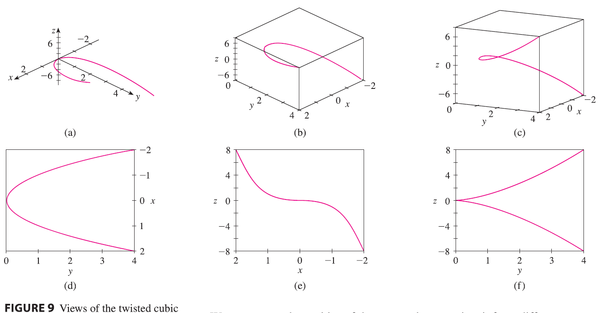
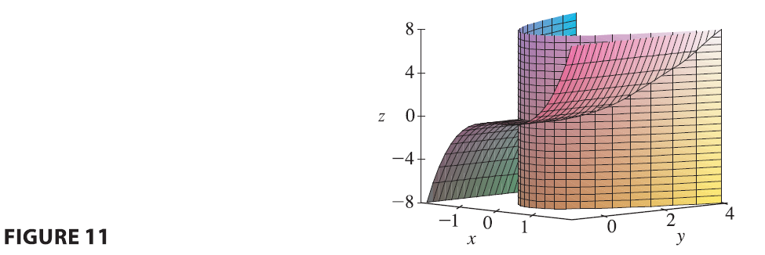

SOLUTION We start by using the computer to plot the curve with parametric equations \(x=t, y=t^2, z=t^3\) for \(-2 \le t \le 2\). The result is shown in Figure 9(a), but it’s hard to see the true nature of the curve from that graph alone. Most three-dimensional computer graphing programs allow the user to enclose a curve or surface in a box instead of displaying the coordinate axes. When we look at the same curve in a box in Figure 9(b), we have a much clearer picture of the curve. We can see that it climbs from a lower corner of the box to the upper corner nearest us, and it twists as it climbs.

We get an even better idea of the curve when we view it from different vantage points. Part (c) shows the result of rotating the box to give another viewpoint. Parts (d), (e), and (f) show the views we get when we look directly at a face of the box. In particular, part (d) shows the view from directly above the box. It is the projection of the curve onto the xy-plane, namely, the parabola \(y=x^2\). Part (e) shows the projection onto the xz-plane, the cubic curve \(z=x^3\). It’s now obvious why the given curve is called a twisted cubic.
Another method of visualizing a space curve is to draw it on a surface. For instance, the twisted cubic in Example 7 lies on the parabolic cylinder \(y=x^2\). (Eliminate the parameter from the first two parametric equations, \(x=t\) and \(y=t^2\).) Figure 10 shows both the cylinder and the twisted cubic, and we see that the curve moves upward from the origin along the surface of the cylinder.

A third method for visualizing the twisted cubic is to realize that it also lies on the cylinder \(z=x^3\). So it can be viewed as the curve of intersection of the cylinders \(y=x^2\) and \(z=x^3\). (See Figure 11.)
